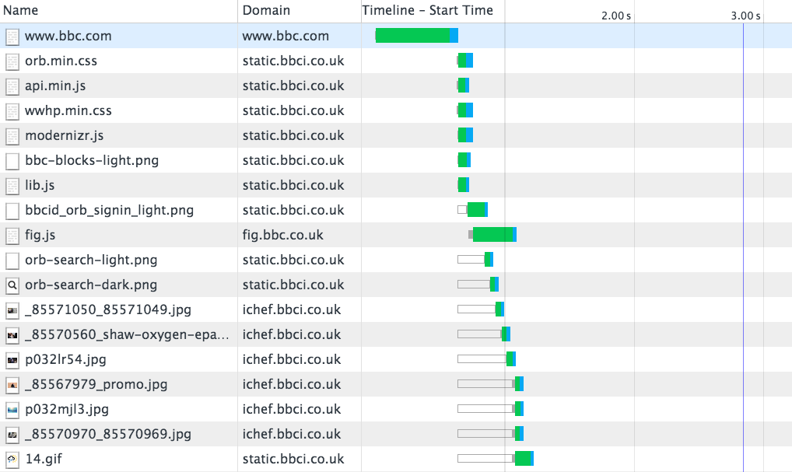
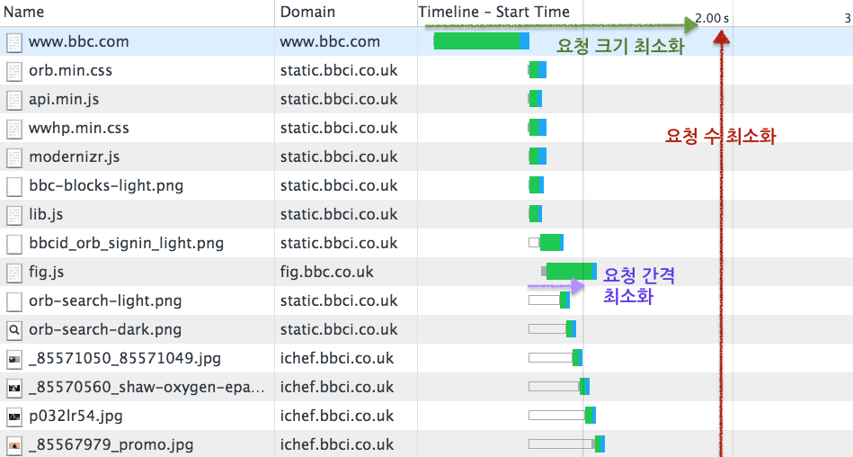
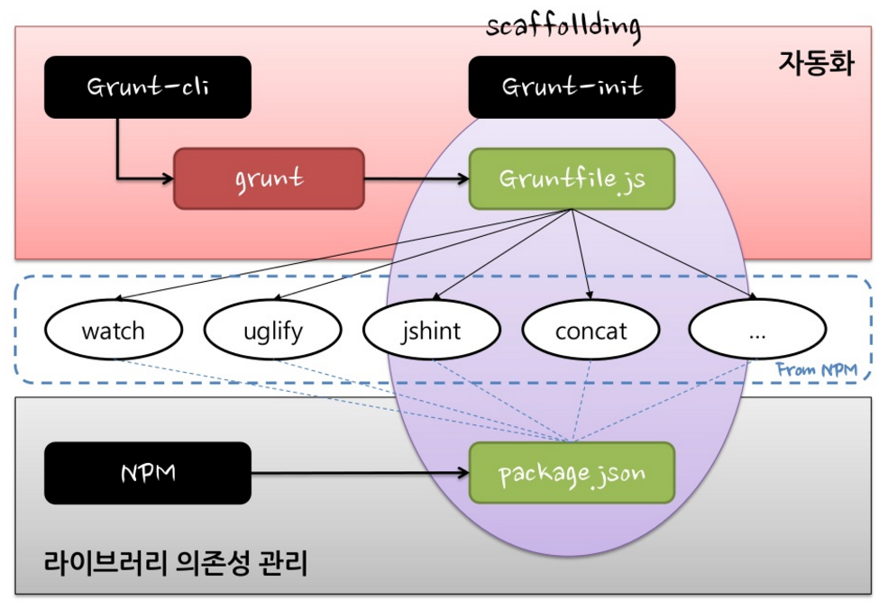
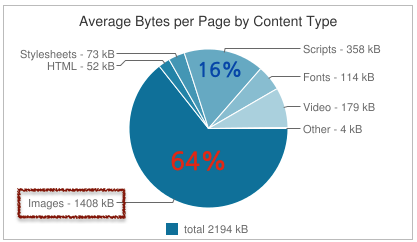
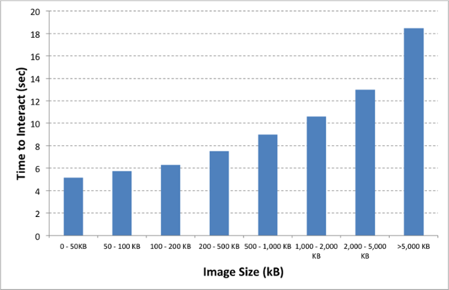
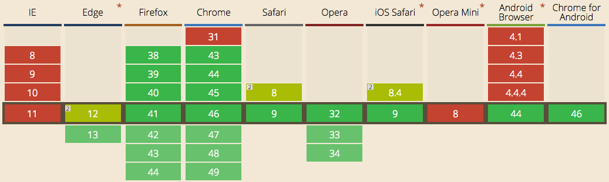

Front-End
성능 개선 자동화하기
Created by 손찬욱 / chanuk.son
Front-End
성능 이란 무엇인가?
RAIL performance model
 developers.google.com http://goo.gl/axNG6r
developers.google.com http://goo.gl/axNG6r
오늘은
Loading
에 대해서만 이야기합니다
Web

Waterfall Chart
Front End 성능 개선이란?
Waterfall chart를 어떻게 개선할 것인가?
Waterfall chart를 어떻게 개선할 것인가?
우리가 개선할 페이지는?
73 Request, 2.2MB transfered
[raw] [tuning]개선 전략
1. 목표 설정
로딩속도 1초!!!
2. 개선 작업
측정
분석
최적화
적용
측정 -> 분석 -> 최적화 -> 적용 -> 측정 -> 분석 -> 최적화 -> 적용 -> 측정 -> 분석 -> 최적화 -> 적용 ...
3. 지속적인 관심
귀찮은데....
좀 알아서 되게 하면 안되나?
The JavaScript Task Runner
Grunt를 왜 사용해야하나?
- 1. Descriptive Language
- 2. Programming
- 3. Plugin
최소의 노력으로, 어떤 것이든, 자동화 할수 있다
Grunt 구조
Grunt 사용을 위한 준비
- node 설치 https://nodejs.org/en/
- grunt-cli 설치
npm install grunt-cli -g
Gruntfile.js
- Depth1 : Task, property
- Depth2 : Target, options
grunt.initConfig({
// task
task : {
// option of all target
options : {},
// target
foo : {
// option of target
options : {}
// src와 dest
src : [ "src/**/*.js", "src/**/*.json" ],
dest : "dest/dest.js"
},
bar : {
"dest" : "source"
},
zoo : {
files: [{
expand: true,
src: "<%= task.foo.dest %>",
dest: "<%= pkg.workspace %>/css"
}]
}
},
// property
pkg : grunt.file.readJSON("package.json")
});
grunt.loadNpmTasks("task"); // load task
grunt.registerTask("default", []); // register task
Grunt 맛보기 실습

측정, 분석하기
성능 지표 측정 시스템
- http://www.webpagetest.org
- http://httparchive.org/
우린 이미 SSA가 있다...
개발환경에서 부터 확인할 순 없을까?
사내망에서는?
private 서버 환경 구성?
grunt-devperf
최적화, 적용하기
정적 파일 최적화 하기
- JavaScript
- CSS
- HTML
Minify와 Obfuscation
function isHWAccelerable() {
var result = false;
var agent = this.agent();
var osVersion = agent.os.version;
var browser = agent.browser.name;
var browserVersion = agent.browser.version;
var useragent;
// chrome (less then 25) has a text blur bug.
// but samsung sbrowser fix it.
if (browser.indexOf("chrome") !== -1) {
result = browserVersion >= "25";
} else if (/ie|firefox|safari|inapp/.test(browser)) {
result = true;
} else if (agent.os.name.indexOf("android") !== -1) {
useragent = (ua.match(/\(.*\)/) || [null])[0];
// android 4.1+ blacklist
// EK-GN120 : Galaxy Camera, SM-G386F : Galaxy Core LTE
// SHW-M420 : Galaxy Nexus , SHW-M200 : NexusS , GT-S7562 : Galaxy S duos
result = (osVersion >= "4.1.0" && !/EK-GN120|SM-G386F/.test(useragent)) ||
(osVersion >= "4.0.3" &&
/SHW-|SHV-|GT-|SCH-|SGH-|SPH-|LG-F160|LG-F100|LG-F180|LG-F200|EK-|IM-A|LG-F240|LG-F260/.test(useragent) && !/SHW-M420|SHW-M200|GT-S7562/.test(useragent));
}
return resultCache(this, "isHWAccelerable", [result, agent], result);
}
1,000 Bytes
Minify와 Obfuscation
주석제거, 공백 제거 (687 Bytes)
function isHWAccelerable(){var result=false;var agent=this.agent();var osVersion=agent.os.version;var browser=agent.browser.name;var browserVersion=agent.browser.version;var useragent;if(browser.indexOf("chrome")!==-1){result=browserVersion>="25";}else if(/ie|firefox|safari|inapp/.test(browser)){result=true;}else if(agent.os.name.indexOf("android")!==-1){useragent=(ua.match(/\(.*\)/)||[null])[0];result=(osVersion>="4.1.0"&&!/EK-GN120|SM-G386F/.test(useragent))||(osVersion>="4.0.3"&&/SHW-|SHV-|GT-|SCH-|SGH-|SPH-|LG-F160|LG-F100|LG-F180|LG-F200|EK-|IM-A|LG-F240|LG-F260/.test(useragent)&&!/SHW-M420|SHW-M200|GT-S7562/.test(useragent));}
return resultCache(this,"isHWAccelerable",[result,agent],result);}
변수명 난독화 (491 Bytes)
function isHWAccelerable(){var e,r=!1,s=this.agent(),t=s.os.version,i=s.browser.name,a=s.browser.version;return-1!==i.indexOf("chrome")?r=a>="25":/ie|firefox|safari|inapp/.test(i)?r=!0:-1!==s.os.name.indexOf("android")&&(e=(ua.match(/\(.*\)/)||[null])[0],r=t>="4.1.0"&&!/EK-GN120|SM-G386F/.test(e)||t>="4.0.3"&&/SHW-|SHV-|GT-|SCH-|SGH-|SPH-|LG-F160|LG-F100|LG-F180|LG-F200|EK-|IM-A|LG-F240|LG-F260/.test(e)&&!/SHW-M420|SHW-M200|GT-S7562/.test(e)),resultCache(this,"isHWAccelerable",[r,s],r)}
50.9% 감소
Grunt Plugin (uglify, cssmin, htmlmin)
https://github.com/gruntjs/grunt-contrib-uglify
최적화 하기 전에는 꼭! 정적 체크가 필요함
여러개의 정적파일이 존재함
Grunt Plugin 활용
js 정적검사 grunt-contrib-jshint
css 정적검사 grunt-contrib-csslint
js, css 파일머지 grunt-contrib-concat
js minify & Obfuscation grunt-contrib-uglify
css minify grunt-contrib-cssmin
html minify grunt-contrib-htmlmin
이미지 최적화 하기
httparchive
컨텐츠 중 이미지의 비중이 가장 높다
이미지 크기가 클수록 비용은 증가한다
그냥...이미지를 제거하자

6KBytes 이미지
.docIcon {
background:#eee;
display:block;
width:80px;
height:112px;
position:relative;
margin:42px auto;
border:1px solid #ccc;
/*
background:-webkit-linear-gradient(top, #ddd 0, #eee 15%, #fff 40%, #fff 70%, #eee 100%);
box-shadow:inset rgba(255,255,255,0.8) 0 1px 1px;
border-radius:3px 15px 3px 3px;
*/
}
.docIcon:before {
/*
content:"";
display:block;
position:absolute;
top:0;
right:0;
width:30px;
height:30px;
background:#ccc;
*/
/*
background:-webkit-linear-gradient(45deg, #fff 0, #eee 50%, #ccc 100%);
box-shadow:rgba(0,0,0,0.05) -1px 1px 1px, inset white 0 0 1px;
border-bottom:1px solid #ccc;
border-left:1px solid #ccc;
*/
/*
border-radius:0 14px 0 0;
*/
}
.docIcon:after {
/*
content:"";
display:block;
position:absolute;
left:0;
top:0;
width:60%;
height:36px;
background:#ccc;
*/
/*
background:-webkit-linear-gradient(top, #ccc 0, #ccc 20%, #fff 20%, #fff 40%, #ccc 40%, #ccc 60%, #fff 60%, #fff 80%, #ccc 80%, #ccc 100%);
*/
/*
margin:40px 20% 0;
*/
}
6배의 용량 감소
1KBytes CSS3 Effect
CSS Sprite
network 비용도 줄이고, 이미지 용량도 줄이자
background-image/position을 이용한 CSS Sprite
#nav li a { background-image:url("image_nav.gif"); }
#nav li a.item1 { background-position: 0px 0px; }
#nav li a.item2 { background-position: -72px 0px; }
#nav li a.item3 { background-position: -144px 0px; }
grunt-spritesmith
고퀄리티 이미지
다양한 디스플레이 크기... 그리고 레티나
반응형 이미지를 이용한
이미지 최적화
srcset을 이용
<img srcset="retina-image.jpg 2x" src="image.jpg" alt="an image" />
화면의 pixel ratio에 맞는 이미지를 사용
picture를 이용
<picture>
<source media="orientation:landscape"
srcset="retina-horizontal-image.jpg 2x, horizontal-image.jpg" />
<source media="orientation:portrait"
srcset="retina-vertical-image.jpg 2x, vertical-image.jpg" />
<img src="image.jpg" alt="an image" />
</picture>
화면의 회전상태에 따라
화면의 pixel ratio에 맞는 이미지를 사용
Browser Support
picturefill polyfill library
http://scottjehl.github.io/picturefill/
<head>
<script>
// Picture element HTML5 shiv
document.createElement( "picture" );
</script>
<script src="picturefill.js" async></script>
</head>grunt-responsive-images
Grunt Plugin 활용
- css Sprite grunt-spritesmith
- 반응형 이미지 grunt-responsive-images
- 이미지 최적화 grunt-contrib-imagemin
얼마나 개선되었나?
11 Request, 661 KB / 1.2MB transfered
[raw] [tuning]정리 - Grunt Plugin
- 측정 및 분석툴 grunt-devperf
- js 정적검사 grunt-contrib-jshint
- css 정적검사 grunt-contrib-csslint
- js, css 파일머지 grunt-contrib-concat
- js minify & Obfuscation grunt-contrib-uglify
- css minify grunt-contrib-cssmin
- html minify grunt-contrib-htmlmin
- css Sprite grunt-spritesmith
- 반응형 이미지 grunt-responsive-images
- 이미지 최적화 grunt-contrib-imagemin